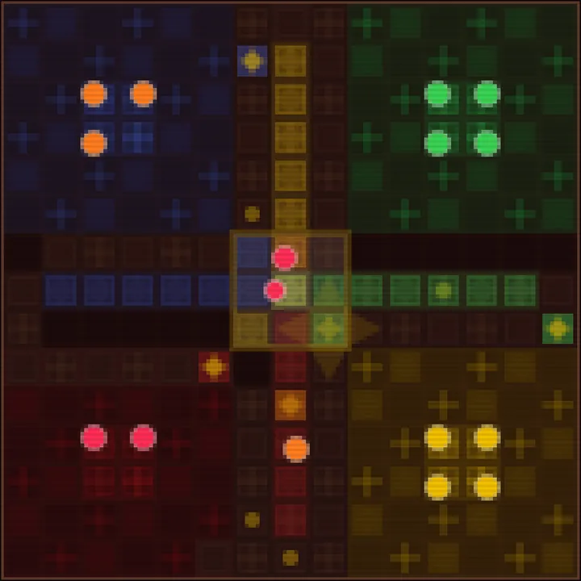
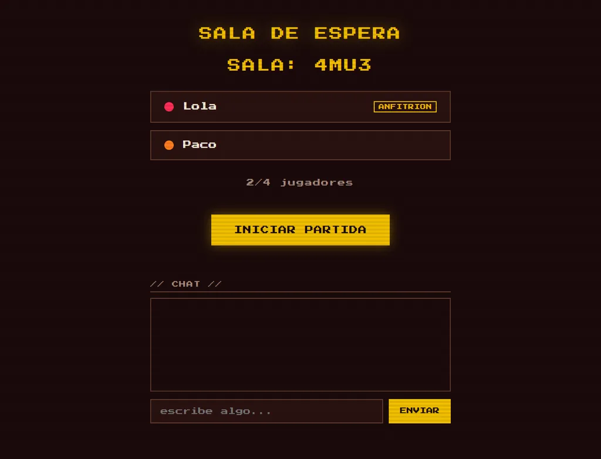
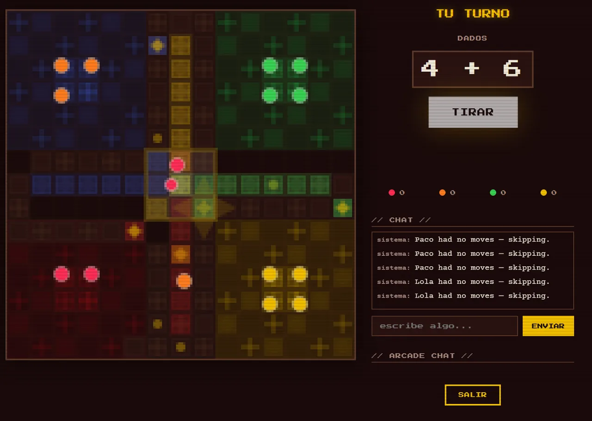

el clásico juego español · 2 to 4 players online
Parchís, the Spanish descendant of pachisi, for two to four players online, with room codes, spectating and chat.
Roll two dice, capture your rivals and bring your pieces up the home run, on a board drawn as Spanish azulejo tiles in red and gold. The game is in Spanish, with a switch to English.


game by magmacrunch media
original game Parchís, a traditional Spanish game. Unofficial, and not affiliated with or endorsed by any trademark holder.